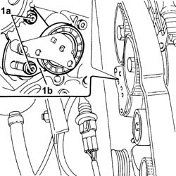

1032C18 mobile timing system tensioner - r + r for 24 valve engines
- Path
- Procedures > 10 ENGINE > 1032 TIMING SYSTEM > 1032C timing system tensioners > 1032C18 mobile timing system tensioner - r + r for 24 valve engines
- Kind
- repair procedure (removal / refitting; the operation number is the code)
- Applies to
- engines: 1.6 TS , 1.8 TS, 2.0 JTS, 2.5 V6, 3.2 V6, 1.9 JTD 16v, 2.0 JTS, 2.4 JTD 20v; all production periods
- Interactive page
- https://sloeber94.github.io/elrnDB-a156/en/#/3237495
Applies to: engines: 2.5 V6, 3.2 V6; all production periods
 Removing
Removing
 Refitting
Refitting4450B10 Front WHEEL (one) - R.R.
7055B64 Engine compartment DUST shield in front wheel arch (one), left or right - R.R.
1092G10 single engine belt r r
1092A10 Crankshaft services PULLEY - R.R.
1032D12 timing system protective cover(s) - r + r
1. Undo the bolts (1a) and remove the moving timing belt tensioner (1b).

Applies to: engines: 2.5 V6, 3.2 V6; all production periods
Refitting
RemovingFit the timing belt moving tensioner and fix it using the bolts without tightening them.
Carry out op. 1016A42 left hand cylinder head ignition coil cover - r+r
Carry out op. 1072B50 sleeves connecting air capacity box to inlet manifold is - r+r
Carry out op. 5510C14 ignition coil/s - r+r
Carry out op. 1016A36 left hand and right hand cam cover - r+r
1016A36 left hand and right hand cam cover - r+r
1072B50 sleeves connecting air capacity box to inlet manifold is - r+r
1016A42 left hand cylinder head ignition coil cover - r+r
1032D12 timing system protective cover(s) - r + r
1092A10 Crankshaft services PULLEY - R.R.
1092G10 single engine belt r r
7055B64 Engine compartment DUST shield in front wheel arch (one), left or right - R.R.
Applies to: engines: 1.6 TS , 1.8 TS; all production periods
Removing
RefittingPlace the car on the lifting bridge.
4450B10 Front WHEEL (one) - R.R.
7055B64 Engine compartment DUST shield in front wheel arch (one), left or right - R.R.
7055B54 under-engine guard - r r
1016A40 ignition coil cover on cylinder head- r+r
1016A20 single cam cover - r + r and replace gasket
1092G10 single engine belt r r
1092G20 engine component single belt fixed tensioner - one - r + r
1092A12 crankshaft pulley - r+r for versions with air conditioner
Applies to: all engines; all production periods
Applies to: engines: 1.6 TS , 1.8 TS; all production periods
1032C10 MOVING timing TENSIONER - R.R. with timing belt/chain removed
Applies to: engines: 1.6 TS , 1.8 TS; all production periods
Refitting
Removing1032C10 MOVING timing TENSIONER - R.R. with timing belt/chain removed
Applies to: all engines; all production periods
Applies to: engines: 1.6 TS , 1.8 TS; all production periods
1032D12 timing system protective cover(s) - r + r
1092A12 crankshaft pulley - r+r for versions with air conditioner
1092G20 engine component single belt fixed tensioner - one - r + r
1092G10 single engine belt r r
1016A20 single cam cover - r + r and replace gasket
1016A40 ignition coil cover on cylinder head- r+r
7055B54 under-engine guard - r r
7055B64 Engine compartment DUST shield in front wheel arch (one), left or right - R.R.
4450B10 Front WHEEL (one) - R.R.
Take the car off the lifting bridge.
Applies to: engines: 2.0 JTS, 2.0 JTS; all production periods
Removing
RefittingProceed with the removal 4450B04 right front wheel r r .
Proceed with the removal 7055B54 under-engine guard - r r .
Proceed with the removal 1016A40 ignition coil cover on cylinder head- r+r .
Proceed with the removal 1032B10 toothed timing belt - r + r for timing adjustment or replacement .
Proceed with the removal 1032C10 MOVING timing TENSIONER - R.R. with timing belt/chain removed .
Applies to: engines: 2.0 JTS, 2.0 JTS; all production periods
Refitting
RemovingProceed with the removal 1032C10 MOVING timing TENSIONER - R.R. with timing belt/chain removed .
Proceed with the removal 1032B10 toothed timing belt - r + r for timing adjustment or replacement .
Proceed with the removal 1016A40 ignition coil cover on cylinder head- r+r .
Proceed with the removal 7055B54 under-engine guard - r r .
Proceed with the removal 4450B04 right front wheel r r .
Applies to: engines: 1.9 JTD 16v; all production periods
Removing
RefittingProceed with removal 1016A10 sound-proofing cover - r + r .
Proceed with removal 1008C10 power unit upper reaction link r r .
Proceed with removal 1060G80 ds electric injection control unit - r r .
Proceed with removal 4450B04 right front wheel r r .
Proceed with removal 7055B54 under-engine guard - r r .
Proceed with removal - 7055B91 Right front WHEEL ARCH LINER - R.R. .
Proceed with removal 1092G10 single engine belt r r .
Proceed with removal 1092A10 Crankshaft services PULLEY - R.R. .
Proceed with removal 1092G20 engine component single belt fixed tensioner - one - r + r .
Proceed with removal 1032D12 timing system protective cover(s) - r + r .
Proceed with removal 1032B10 toothed timing belt - r + r for timing adjustment or replacement .
Proceed with removal 1032C10 MOVING timing TENSIONER - R.R. with timing belt/chain removed .
Applies to: engines: 1.9 JTD 16v; all production periods
Refitting
RemovingProceed with refitting 1032C10 MOVING timing TENSIONER - R.R. with timing belt/chain removed .
Proceed with refitting 1032B10 toothed timing belt - r + r for timing adjustment or replacement .
Proceed with refitting 1032D12 timing system protective cover(s) - r + r .
Proceed with refitting 1092G20 engine component single belt fixed tensioner - one - r + r .
Proceed with refitting 1092A10 Crankshaft services PULLEY - R.R. .
Proceed with refitting 1092G10 single engine belt r r .
Proceed with refitting - 7055B91 Right front WHEEL ARCH LINER - R.R. .
Proceed with refitting 7055B54 under-engine guard - r r .
Proceed with refitting 4450B04 right front wheel r r .
Proceed with refitting 1060G80 ds electric injection control unit - r r .
Proceed with refitting 1008C10 power unit upper reaction link r r .
Proceed with refitting 1016A10 sound-proofing cover - r + r .
Applies to: engines: 2.4 JTD 20v; all production periods
Removing
RefittingProceed with removal 4450B04 right front wheel r r .
Proceed with removal 7055B54 under-engine guard - r r .
Proceed with removal - 7055B91 Right front WHEEL ARCH LINER - R.R. .
Proceed with removal - 7055B66 Engine compartment DUST SHIELD protection in right front wheel arch - R.R. .
Proceed with removal 1092G10 single engine belt r r .
Proceed with removal 1092A10 Crankshaft services PULLEY - R.R. .
Proceed with removal 1092G21 engine component single belt fixed tensioner - r rwith belt removed .
Proceed with removal 1016A10 sound-proofing cover - r + r .
Proceed with removal 1008C10 power unit upper reaction link r r .
Proceed with removal 1032D12 timing system protective cover(s) - r + r .
Proceed with removal 1032B10 toothed timing belt - r + r for timing adjustment or replacement .
Proceed with removal 1032C10 MOVING timing TENSIONER - R.R. with timing belt/chain removed .
Applies to: engines: 2.4 JTD 20v; all production periods
Refitting
RemovingProceed with refitting 1032C10 MOVING timing TENSIONER - R.R. with timing belt/chain removed .
Proceed with refitting 1032B10 toothed timing belt - r + r for timing adjustment or replacement .
Proceed with refitting 1032D12 timing system protective cover(s) - r + r .
Proceed with refitting 1008C10 power unit upper reaction link r r .
Proceed with refitting 1016A10 sound-proofing cover - r + r .
Proceed with refitting 1092G21 engine component single belt fixed tensioner - r rwith belt removed .
Proceed with refitting 1092A10 Crankshaft services PULLEY - R.R. .
Proceed with refitting 1092G10 single engine belt r r .
Proceed with refitting - 7055B66 Engine compartment DUST SHIELD protection in right front wheel arch - R.R. .
Proceed with refitting - 7055B91 Right front WHEEL ARCH LINER - R.R. .
Proceed with refitting 7055B54 under-engine guard - r r .
Proceed with refitting 4450B04 right front wheel r r .
Topics linked from this page (23)
- 1008C10 power unit upper reaction link r r
- 1016A10 sound-proofing cover - r + r
- 1016A20 single cam cover - r + r and replace gasket
- 1016A36 left hand and right hand cam cover - r+r
- 1016A40 ignition coil cover on cylinder head- r+r
- 1016A42 left hand cylinder head ignition coil cover - r+r
- 1032B10 toothed timing belt - r + r for timing adjustment or replacement
- 1032B14 toothed timing belt - r + r for timing adjustment or replacement versions with air conditioner
- 1032C10 MOVING timing TENSIONER - R.R. with timing belt/chain removed
- 1032D12 timing system protective cover(s) - r + r
- 1060G80 ds electric injection control unit - r r
- 1072B50 sleeves connecting air capacity box to inlet manifold is - r+r
- 1092A10 Crankshaft services PULLEY - R.R.
- 1092A12 crankshaft pulley - r+r for versions with air conditioner
- 1092E10 counter-rotating shaft drive toothed belt - r + r
- 1092G10 single engine belt r r
- 1092G20 engine component single belt fixed tensioner - one - r + r
- 1092G21 engine component single belt fixed tensioner - r rwith belt removed
- 4450B04 right front wheel r r
- 4450B10 Front WHEEL (one) - R.R.
- 5510C14 ignition coil/s - r+r
- 7055B54 under-engine guard - r r
- 7055B64 Engine compartment DUST shield in front wheel arch (one), left or right - R.R.